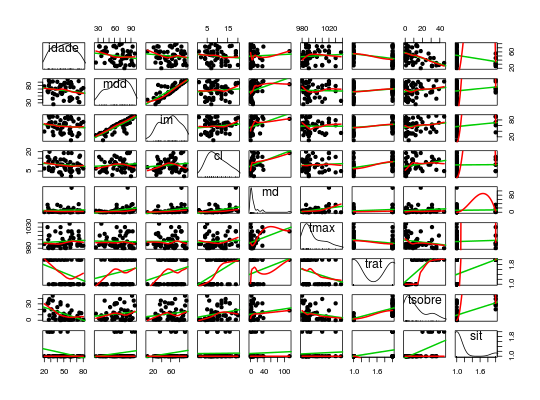

Estudo com 51 pacientes adultos, previamente diagnosticados com um tipo agudo de leucemia, que receberam um tipo de tratamento sendo verificada, após certo período, a eficiência ou não do tratamento.
Um data.frame com 51 pacientes e 9 variáveis.
idademddifclmdtmaxtrattsobresitPAULA (2004), Exercício 3.7.19, página 276.
Everitt, B. S. (1994). A Handbook of Statistical Analysis using S-Plus. Chapman and Hall, London. (Página 253)
data(PaulaEx3.7.20)#> Warning: data set ‘PaulaEx3.7.20’ not foundstr(PaulaEx3.7.20)#> 'data.frame': 51 obs. of 9 variables: #> $ idade : int 20 25 26 26 27 27 28 28 31 33 ... #> $ mdd : int 78 64 61 64 95 80 88 70 72 58 ... #> $ im : int 39 61 55 64 95 64 88 70 72 58 ... #> $ cl : int 7 16 12 16 6 8 20 14 5 7 ... #> $ md : num 0.6 35 7.5 21 7.5 0.6 4.8 10 2.3 5.7 ... #> $ tmax : int 990 1030 982 1000 980 1010 986 1010 988 986 ... #> $ trat : int 1 1 1 1 1 0 1 1 1 0 ... #> $ tsobre: int 18 31 31 31 36 1 9 39 20 4 ... #> $ sit : int 0 1 0 0 0 0 0 1 1 0 ...# Transformar variáveis. PaulaEx3.7.20 <- transform(PaulaEx3.7.20, trat = as.factor(PaulaEx3.7.20$trat), sit = as.factor(PaulaEx3.7.20$sit)) library(car) scatterplotMatrix(~idade + mdd + im + cl + md + tmax + trat + tsobre + sit, spread = FALSE, pch = 20, lwd = 2, smooth = TRUE, data = PaulaEx3.7.20, cex = 1.5)